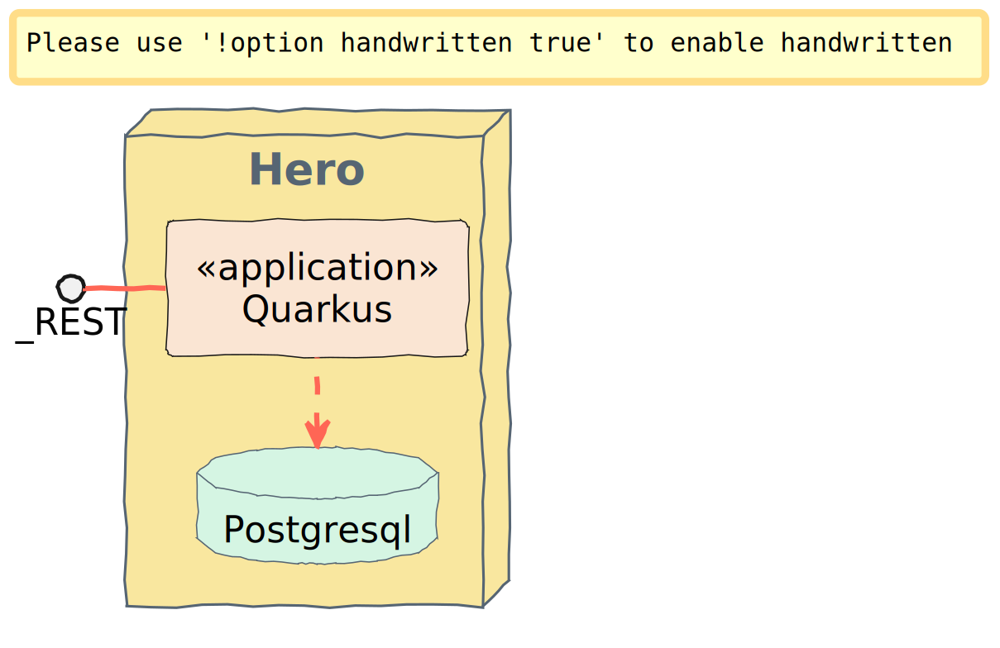

Creating the Hero Microservice
Bootstrapping the Hero Rest Endpoint
Red Hat Developer Hub Software templates and Dev Spaces workspace.
To create a Dev Spaces (DS) workspace, you’ll first need to create a Software Component using a Red Hat Developer Hub (RHDH) Software Template:
- Navigate to the Create Option: in the left-hand menu of the RHDH, click on the “Create” option.
- Select the template: you’ll see a list of available templates. Choose the
quarkus-postgresqltemplate from the list. - Configure the workspace: after selecting the template, you’ll need to provide the necessary values for clusters and other configurations. Most of these fields will be pre-filled by default, so you may only need to make minor adjustments if necessary.
- Proceed with the setup: Once you’ve reviewed the configurations, proceed to create your DS workspace.
Once created, the component is available in the catalog. You can access it to have an overview:

Launch the Dev Spaces creation by clicking the link OpenShift Dev Spaces (VS Code).
The Hero Service
At the heart of the Super Hero application come heroes.
We need to expose a REST API allowing CRUD operations on super heroes. This microservice is, let’s say, a classical microservice. It uses HTTP to expose a REST API, and it internally stores data into a database.
This service will be used by the fight microservice.

In the following sections, you will learn:
- how to create a new Quarkus application using Red Hat Developer Hub, and
- how to implement REST API using JAX-RS, and
- how to compose your application using CDI beans, and
- how to access your database using Hibernate with Panache, and
- how to use transactions, and
- how to enable OpenAPI and Swagger-UI.
First, let’s describe our service. The Super Heroes microservice stores super-heroes, with their names, powers, and so on. The REST API allows adding, removing, listing, and picking a random hero from the stored set.
Nothing outstanding but a good first step to discover Quarkus.
Directory Structure
Once you bootstrap the project, you get the following directory structure with a few Java classes and other artifacts:
It generates the following in the hero-service folder:
- the Maven structure with a
pom.xml - an
io.quarkus.workshop.superheroes.hero.HeroResourceresource exposed on/api/heroes - an associated unit test
HeroResourceTest - the landing page
index.htmlthat is accessible after starting the application - example
Dockerfilefiles for both native and jvm modes insrc/main/docker - the
application.propertiesconfiguration file
Once generated, look at the pom.xml.
You will find the here import of the Quarkus BOM (bill of materials), allowing you to omit the version on the different Quarkus dependencies.
In addition, you can see the quarkus-maven-plugin, responsible for the packaging of the application and also providing the development mode support.
If we focus on the dependencies section, you can see the extension allowing the development of REST applications:
The JAX-RS Resource
During the project creation, the HeroResource.java file has been created with the following content:
package io.quarkus.workshop.superheroes.hero;
@Path("/api/heroes")
public class HeroResource {
@GET
@Produces(MediaType.TEXT_PLAIN)
public String hello() {
return "hello";
}
}
It’s a very simple REST endpoint, returning “hello” to HTTP GET requests to /api/heroes.
Running the Application
We are now ready to run our application.
You can use either the Quarkus or Apache Maven command-line interface in a Terminal. Open a Terminal by clicking on the hamburger menu (three horizontal lines) located in the upper-left corner of the screen. Navigate to Terminal and select New Terminal from the dropdown menu.
Then, run one of the following commands:
./mvnw quarkus:dev
or
quarkus dev
$ quarkus dev
[INFO] Scanning for projects...
[INFO]
[INFO] ------------------< com.redhat.workshop:hero-service >------------------
[INFO] Building hero-service 1.0-SNAPSHOT
[INFO] from pom.xml
[INFO] --------------------------------[ jar ]---------------------------------
[INFO]
[INFO] --- quarkus:3.13.2:dev (default-cli) @ hero-service ---
[INFO] Invoking resources:3.3.1:resources (default-resources) @ hero-service
[INFO] Copying 2 resources from src/main/resources to target/classes
[INFO] Invoking quarkus:3.13.2:generate-code (default) @ hero-service
[INFO] Invoking compiler:3.13.0:compile (default-compile) @ hero-service
[INFO] Nothing to compile - all classes are up to date.
[INFO] Invoking resources:3.3.1:testResources (default-testResources) @ hero-service
[INFO] skip non existing resourceDirectory /projects/hero/src/test/resources
[INFO] Invoking quarkus:3.13.2:generate-code-tests (default) @ hero-service
[INFO] Invoking compiler:3.13.0:testCompile (default-testCompile) @ hero-service
[INFO] Nothing to compile - all classes are up to date.
----------------------------
--- Help improve Quarkus ---
----------------------------
* Learn more: https://quarkus.io/usage/
* Do you agree to contribute anonymous build time data to the Quarkus community? (y/n and enter)
[info] [Quarkus build analytics] Didn't receive the user's answer after 10 seconds. The question will be asked again next time.
Listening for transport dt_socket at address: 5005
2024-08-28 11:39:46,023 INFO [io.qua.dat.dep.dev.DevServicesDatasourceProcessor] (build-21) Dev Services for default datasource (postgresql) started - container ID is b64fe935733f
2024-08-28 11:39:46,026 INFO [io.qua.hib.orm.dep.dev.HibernateOrmDevServicesProcessor] (build-34) Setting quarkus.hibernate-orm.database.generation=drop-and-create to initialize Dev Services managed database
__ ____ __ _____ ___ __ ____ ______
--/ __ \/ / / / _ | / _ \/ //_/ / / / __/
-/ /_/ / /_/ / __ |/ , _/ ,< / /_/ /\ \
--\___\_\____/_/ |_/_/|_/_/|_|\____/___/
2024-08-28 11:39:46,603 WARN [io.qua.config] (Quarkus Main Thread) Unrecognized configuration key "quarkus.smallrye-openapi.store-schema-directory" was provided; it will be ignored; verify that the dependency extension for this configuration is set or that you did not make a typo
2024-08-28 11:39:48,103 WARN [org.hib.eng.jdb.spi.SqlExceptionHelper] (JPA Startup Thread) SQL Warning Code: 0, SQLState: 00000
2024-08-28 11:39:48,105 WARN [org.hib.eng.jdb.spi.SqlExceptionHelper] (JPA Startup Thread) table "myentity" does not exist, skipping
2024-08-28 11:39:48,106 WARN [org.hib.eng.jdb.spi.SqlExceptionHelper] (JPA Startup Thread) SQL Warning Code: 0, SQLState: 00000
2024-08-28 11:39:48,106 WARN [org.hib.eng.jdb.spi.SqlExceptionHelper] (JPA Startup Thread) sequence "myentity_seq" does not exist, skipping
2024-08-28 11:39:48,316 INFO [io.quarkus] (Quarkus Main Thread) hero-service 1.0-SNAPSHOT on JVM (powered by Quarkus 3.13.2) started in 7.445s. Listening on: http://0.0.0.0:8080
2024-08-28 11:39:48,317 INFO [io.quarkus] (Quarkus Main Thread) Profile dev activated. Live Coding activated.
2024-08-28 11:39:48,317 INFO [io.quarkus] (Quarkus Main Thread) Installed features: [agroal, cdi, hibernate-orm, hibernate-orm-panache, hibernate-validator, jdbc-postgresql, micrometer, narayana-jta, rest, rest-jackson, smallrye-context-propagation, smallrye-health, vertx]
--
Tests paused
Press [e] to edit command line args (currently ''), [r] to resume testing, [o] Toggle test output, [:] for the terminal, [h] for more options>
Then check that the endpoint returns hello as expected:
where $URL is the running service endpoint (host + port number).
Alternatively, you can open $URL/api/heroes in your browser.
Development Mode
quarkus:dev runs Quarkus in development mode.
This enables hot deployment with background compilation, which means that when you modify your Java files and/or your resource files and invoke a REST endpoint (i.e. cUrl command or refresh your browser), these changes will automatically take effect.
This works as well for resource files like the configuration property and HTML files. Refreshing the browser triggers a scan of the workspace, and if any changes are detected, the Java files are recompiled and the application is redeployed; your request is then serviced by the redeployed application. If there are any issues with compilation or deployment an error page will let you know.
The development mode also allows debugging and listens for a debugger on port 5005.
If you want to wait for the debugger to attach before running you can pass -Dsuspend=true on the command line.
If you don’t want the debugger at all you can use -Ddebug=false.
Alright, time to change some code.
Open your favorite IDE and import the project.
To check that the hot reload is working, update the method HeroResource.hello() by returning the String “hello hero”.
Now, execute the cUrl command again, the output has changed without you to having to stop and restart Quarkus:
Testing the Application
So far so good, but wouldn’t it be better with a few tests, just in case?
In the generated pom.xml file, you can see 2 test dependencies:
<dependency>
<groupId>io.quarkus</groupId>
<artifactId>quarkus-junit5</artifactId>
<scope>test</scope>
</dependency>
<dependency>
<groupId>io.rest-assured</groupId>
<artifactId>rest-assured</artifactId>
<scope>test</scope>
</dependency>
Quarkus supports JUnit 4 and JUnit 5 tests. In the generated project, we use JUnit 5.
We also set the java.util.logging system property to make sure tests will use the correct log manager.
<plugin>
<artifactId>maven-surefire-plugin</artifactId>
<version>${surefire-plugin.version}</version>
<configuration>
<systemPropertyVariables>
<java.util.logging.manager>org.jboss.logmanager.LogManager</java.util.logging.manager>
<maven.home>${maven.home}</maven.home>
</systemPropertyVariables>
</configuration>
</plugin>
The generated project contains a simple test in HeroResourceTest.java.
package io.quarkus.workshop.superheroes.hero;
@QuarkusTest
public class HeroResourceTest {
@Test
public void testHelloEndpoint() {
given()
.when().get("/api/heroes")
.then()
.statusCode(200)
.body(is("Hello from Quarkus REST"));
}
}
By using the QuarkusTest runner, the HeroResourceTest class instructs JUnit to start the application before the tests.
Then, the testHelloEndpoint method checks the HTTP response status code and content.
Notice that these tests use RestAssured, but feel free to use your favorite library.
Execute it with ./mvnw test or from your IDE.
Continuous testing
Quarkus supports continuous testing, where tests run immediately after code changes have been saved. This allows you to get instant feedback on your code changes.
Quarkus detects which tests cover which code, and uses this information to only run the relevant tests when code is changed. When you start Quarkus in dev mode, down the bottom of the screen you should see the following:
Press r and the tests will start running. You should see the status change down the bottom of the screen as they are running, and it should finish with:All 1 test is passing (0 skipped), 1 test was run in 8053ms. Tests completed at 12:11:25.
Press [e] to edit command line args (currently ''), [r] to re-run, [o] Toggle test output, [:] for the terminal, [h] for more options>
Packaging and Running the Application
The application is packaged using ./mvnw package .
It produces 2 jar files in /target:
rest-hero-1.0-SNAPSHOT.jar: containing just the classes and resources of the projects, it’s the regular artifact produced by the Maven build;quarkus-app/quarkus-run.jar: being an executable jar. Be aware that it’s not an über-jar as the dependencies are copied into thetarget/quarkus-app/libdirectory.